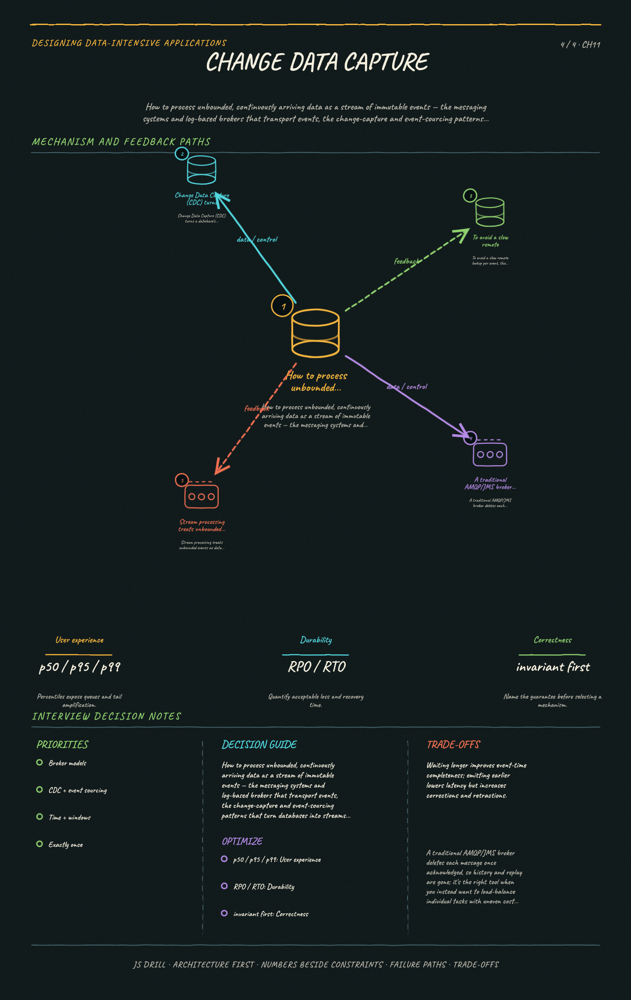

https://frosty110.github.io/js-drill/assets/system-design/infographics/ddia/ch11/change-data-capture.pngHow to process unbounded, continuously arriving data as a stream of immutable events — the messaging systems and log-based brokers that transport events, the change-capture and event-sourcing patterns that turn databases into streams, and the time-reasoning and fault-tolerance issues stream operators must handle.
All questions, model answers and diagrams for Stream Processing →